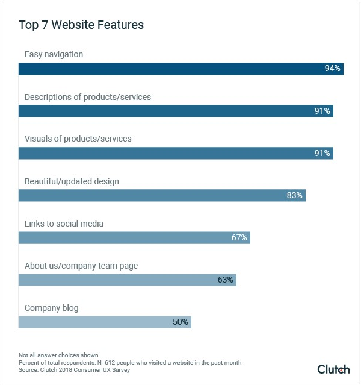
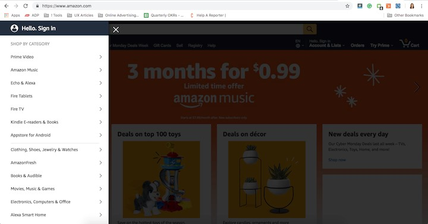

Muhammad Kamran Ashraf
4159-BSCS4-F19
Click here to open
DICE Game
Website:
Yale University School of Art:
Expectation:
A creative and convenient website of the Yale University School of Art. Reality – a weird resource in the style
of 00’s. The content has absolutely no structure, and in addition, the footer, header, and sidebar are poorly
designed. There are also lots of blinking animations, underlined links, strange pictures, and low-quality
photos. Maybe, true artists will find this resource quite original in terms of an artistic approach, but its
usability is extremely far from perfect.
Website Link: https://www.art.yale.edu/
1. Easy Navigation Is the Most Useful Website Feature
Abstract:
People prefer websites that are easy to use and navigate.
Almost everyone (94%) believes easy navigation is the most useful website feature.

To determine which website features people consider useful, we combined responses for respondents who selected either “extremely” or “somewhat” useful. If survey respondents rated a feature as “slightly” or “not at all” useful, we did not consider their responses in our tally.
A website that’s easy to navigate provides users with faster, more efficient access to content they want.
People prefer a website with a clear menu structure that makes it easy to maneuver between pages. Amazon is known for being easy to navigate, despite its high volume of content.

On its homepage, Amazon presents options for users to navigate and explore the site. By making menus easy to access and darkening the rest of the screen, people can focus on shopping categories and bypass the tempting offerings on the home screen.
Businesses should follow Amazon’s example and prioritize functionality and navigation for their users. Not doing so could mean losing potential customers.
1. Introduction:
The issue of Internet addiction is grabbing headlines, which is presenting businesses with a new set of challenges as people spend less time online. And when they do spend time online, 94% of consumers say they want an easy to navigate website.
This is according to a new survey by Clutch which looked to identify the top website features people value most. And because they’re spending less time online, it only makes sense consumers want more efficiency.
Small business owners with a digital presence, therefore, must create websites with a great user experience (UX) to ensure their audience stays engaged and they return.
Kelsey McKeon, who wrote the report on Clutch said, people want to spend less time online. This requires companies to design websites which take into account the preference of their customers and what they find most useful.
McKeon goes on to say, “Easy navigation features should be companies’ top priority when creating a new design. By adding simple, responsive navigation toolbars and menus, companies can create an intuitive user experience. Businesses should also incorporate a blend of current trends and timeless design elements for an evergreen design that people will still find modern.”
In order to find out just what consumers are looking for in a website, Clutch asked 612 people which website UX features are important to them and which they can live without.
The respondents in the survey were from the US, made up of 63% female and 37% male ranging in age from 18 to 65+ years old. They did their browsing on Chrome (65%), Safari (18%), Firefox (5%), Internet Explorer (1%), and 10% used something else.
Survey Results Show Easy Website Navigation Is Most Important
When it comes to daily leisure time spent online, 33% said they spent one to three hours online. This was followed by another 30% who said four to six hours, 14% seven to nine hours, and 18% at more than 10 hours.
It is important to remember this is just for leisure when you add in the time consumer spent online for work it quickly makes up a large percentage of the day.
Whether it is for leisure or work, there is a clear consensus on what consumers want when they are online.
For 94% of the respondents, easy navigation is the most useful website feature. A site which is easy to navigate allows users to find the content they’re looking for much faster. This means having a clear menu structure and the ability to navigate between pages quickly and efficiently.
After faster navigation, 91% said they wanted better descriptions of products and services, followed by the same percentage of people who said they want to see visuals of products and services.
Beautiful/update design was important for 83% of the respondents, with links to social media, the about us/company team page, and company blog getting 67, 63, and 50 percent of the responses respectively.
Key Takeaway
The biggest takeaway from this survey is business should listen to their customers when it comes to designing their website.
McKeon says, “By making website users’ needs a priority, companies can increase their web traffic and conversions. All it takes is listening to what people really want.”